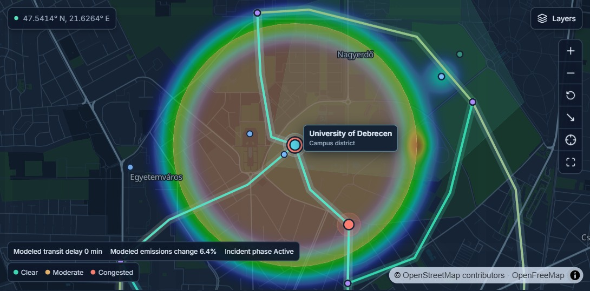

Debrecen, Hungary
Test city decisions before acting.
AgentCity Twin combines a city map with a model of its roads and travel demand. Compare responses to a disruption and see the evidence behind the recommendation.

© OpenStreetMap contributorsRecorded simulation
Five scenarios across Debrecen
University of Debrecen
University corridor accident
Compare diversion and transit priority with restricting access near campus.
- Starts
- 17:00
- Duration
- 60 min
- People affected
- 1,200
Recorded simulation
What changes over two hours?
For University corridor accident, choose a time to compare the baseline forecast with the recommended response. The baseline assumes no new intervention.
Recommended strategy
Diversion and transit priority
Redirect through-traffic and preserve transit capacity around the affected area.
- Baseline
- Recommended
Weighted strategy scores out of 100
| Measure | Baseline | Recommended |
|---|
The emissions values show modeled change from a reference level.
Decision evidence
The recommendation carries an audit trail.
The orchestrator assigns work to specialists. The execution plan shows their tools and observations. When specialists disagree, the worker can simulate a combined response and the Critic checks the evidence before ranking.
The simulator computes the numbers. LM Studio supplied specialist advice for the recorded demos. The workspace records reviews of high-impact recommendations, and operators use their own procedures to act.
What produces the numbers?
The network simulation computes the metrics and weighted scores. LM Studio supplies advisory text based on the evidence the workspace allows.
Is this live Debrecen telemetry?
This walkthrough uses recorded simulation data. A deployment can connect approved sensors and GTFS-Realtime feeds, then calibrate against local measurements.
What if the model is unavailable?
The specialist keeps its rule-based finding. The audit trace records the advisory failure, and the network simulation can still finish.
Who can act on a recommendation?
An authorized operator reviews high-impact recommendations and records the decision. The app supports planning and review.